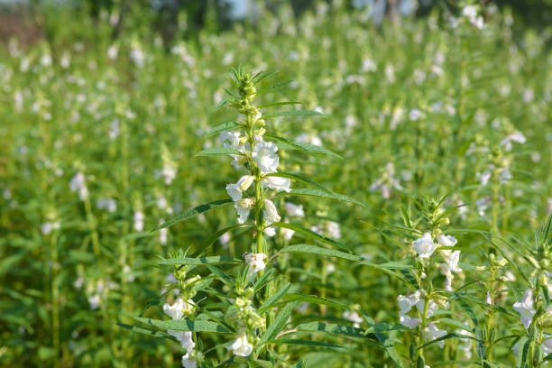
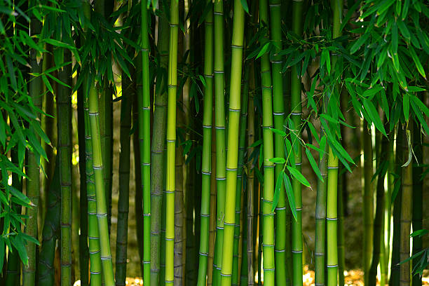

<html lang="en">

</html>

</html>

<head>
    <meta charset="UTF-8">
    <meta name="Generator" content="EditPlus®">
    <meta name="Author" content="">
    <meta name="Keywords" content="">
    <meta name="Description" content="">
    <meta name="viewport" content="width=device-width, initial-scale=1.0">
    <title>AD-GROWN</title>
    <style>
        @media (min-width: 1000px) {
            #a {
                display: flex;
            }

            .b {
                width: 280%;
            }

            .c {
                width: 180%;
            }
        }


        /* Style the container for the Google Translate Element */
        #google_translate_element_container {
            position: fixed;
            bottom: 10px;
            right: 10px;
            z-index: 9999;
            transition: box-shadow 0.3s ease;
            /* Add transition for a smoother effect */
        }

        /* Style the Google Translate Element */
        #google_translate_element {
            border: 1px solid rgba(255, 174, 0);
            /* Cyan border color */
            padding: 10px;
            background-color: #f0f8ff;
            /* AliceBlue background color */
            border-radius: 5px;
            box-shadow: 0 0 10px rgba(255, 174, 0);
            /* Initial box-shadow */
        }

        /* Add box-shadow when hovering over the container */
        #google_translate_element_container:hover {
            box-shadow: 0 0 5px rgb(255, 174, 0),
                0 0 25px rgb(255, 174, 0),
                0 0 50px rgb(255, 174, 0);
        }

        @media (max-width: 460px) {
            #imgX {
                height: 200px;
                width: 300px;
            }

        }
    </style>
    <script type="text/javascript"
        src="https://translate.google.com/translate_a/element.js?cb=googleTranslateElementInit"></script>
    <script type="text/javascript">
        function googleTranslateElementInit() {
            new google.translate.TranslateElement({ pageLanguage: 'tel', layout: google.translate.TranslateElement.InlineLayout }, 'google_translate_element');
        }
    </script>
</head>

<body>
    <div id="google_translate_element_container">
        <div id="google_translate_element"></div>
    </div>
    <!--మొక్కజొన్న అని కూడా పిలువబడే మొక్కజొన్న, ప్రపంచంలోని అనేక ప్రాంతాలలో ప్రధానమైన పంట.  మొక్కజొన్న యొక్క పెరుగుతున్న విధానం నాటడం నుండి కోత వరకు అనేక దశలను కలిగి ఉంటుంది.  మొక్కజొన్న సాగు విధానం యొక్క సంక్షిప్త అవలోకనం ఇక్కడ ఉంది:

 నేల తయారీ: 6.0-7.5 pHతో బాగా ఎండిపోయిన నేలలో మొక్కజొన్న బాగా పెరుగుతుంది.  మట్టిని 6-8 అంగుళాల లోతు వరకు దున్నాలి మరియు ఏవైనా కలుపు మొక్కలు లేదా రాళ్లను తొలగించాలి.

 నాటడం: మొక్కజొన్న సాధారణంగా వసంతకాలంలో పండిస్తారు, మంచు ప్రమాదం దాటిన తర్వాత.  విత్తనాలను 1-2 అంగుళాల లోతులో, 30-36 అంగుళాల దూరంలో ఉన్న వరుసలలో నాటాలి.

 అంకురోత్పత్తి: మొక్కజొన్న విత్తనాలు 7-10 రోజులలో మొలకెత్తుతాయి, నేల తేమగా మరియు ఉష్ణోగ్రత తగినంతగా ఉంటే.  విత్తనం ఒక చిన్న రూట్ మరియు రెమ్మను పంపుతుంది, ఇది చివరికి మొక్కజొన్న మొక్కగా పెరుగుతుంది.

 పెరుగుదల: మొక్కజొన్న మొక్క పెరుగుతూనే ఉంటుంది, ఆకులు మరియు కాండాలను అభివృద్ధి చేస్తుంది.  ఇది కూడా tassels మరియు చెవులు ఉత్పత్తి ప్రారంభమవుతుంది.

 పరాగసంపర్కం: మొక్క పైభాగంలో ఉన్న టాసెల్స్‌లో మగ పువ్వులు ఉంటాయి, చెవుల్లో ఆడ పువ్వులు ఉంటాయి.  టసెల్స్ నుండి పుప్పొడి చెవుల పట్టుపై పడినప్పుడు పరాగసంపర్కం జరుగుతుంది.

 చెవి అభివృద్ధి: చెవులు పరాగసంపర్కం జరిగిన తర్వాత, అవి కెర్నలు అభివృద్ధి చెందడం ప్రారంభిస్తాయి.  ప్రతి కెర్నల్ ఒక పట్టుకు జోడించబడి ఉంటుంది, ఇది చివరికి ఎండిపోయి పడిపోతుంది.

 హార్వెస్టింగ్: మొక్కజొన్న సాధారణంగా శరదృతువులో పండిస్తారు, చెవులు పూర్తిగా పరిపక్వం చెందినప్పుడు మరియు కాండాలు మరియు ఆకులు గోధుమ రంగులోకి మారుతాయి.  చెవులను చేతితో లేదా యాంత్రిక హార్వెస్టర్ ఉపయోగించి పండిస్తారు.

 మొత్తంమీద, మొక్కజొన్న సాగు విధానంలో జాగ్రత్తగా నేల తయారీ, సరైన సమయంలో నాటడం మరియు అంకురోత్పత్తి, పెరుగుదల, పరాగసంపర్కం మరియు చెవి అభివృద్ధికి సరైన పరిస్థితులను నిర్ధారించడం వంటివి ఉంటాయి.
jowar
జొన్న అని కూడా పిలువబడే జొన్న, దాని ధాన్యాల కోసం విస్తృతంగా పండించే తృణధాన్యాల పంట. జోవర్ పెరుగుదల ప్రక్రియను అనేక దశలుగా విభజించవచ్చు:

విత్తన ఎంపిక మరియు నాటడం: చేతితో లేదా మెకానికల్ ప్లాంటర్‌ని ఉపయోగించి నాటడానికి అధిక-నాణ్యత గల విత్తనాలను ఎంపిక చేస్తారు. విత్తనాలు బాగా తయారుచేసిన నేలలో, సాధారణంగా వరుసలలో పండిస్తారు.

అంకురోత్పత్తి మరియు మొలక దశ: నాటిన తరువాత, జొన్న గింజలు మొలకెత్తుతాయి మరియు మొలకలుగా పెరుగుతాయి. ఈ దశలో, బలమైన రూట్ వ్యవస్థను ఏర్పాటు చేయడానికి మరియు ఆరోగ్యకరమైన ఆకులను అభివృద్ధి చేయడానికి మొలకలకు తగినంత తేమ, వెచ్చదనం మరియు పోషకాలు అవసరం.

ఏపుగా పెరగడం: జొన్న మొక్కలు మంచి రూట్ వ్యవస్థను ఏర్పాటు చేసుకున్న తర్వాత, అవి ఏపుగా పెరగడంపై దృష్టి పెడతాయి. మొక్కలు పెద్దవిగా పెరుగుతాయి మరియు కిరణజన్య సంయోగక్రియ మరియు ధాన్యం ఉత్పత్తికి ముఖ్యమైన ఆకులు మరియు కొమ్మలను అభివృద్ధి చేస్తాయి. మొక్కలు ఆరోగ్యకరమైన పెరుగుదలను ప్రోత్సహించడానికి క్రమం తప్పకుండా నీటిపారుదల మరియు ఫలదీకరణం చేయబడతాయి.

పుష్పించే మరియు ధాన్యం ఏర్పడటం: దాదాపు 45-60 రోజుల పెరుగుదల తర్వాత, జొన్న మొక్కలు పుష్పాలను ఉత్పత్తి చేయడం ప్రారంభిస్తాయి. పువ్వులు గాలి లేదా స్వీయ-పరాగసంపర్కం ద్వారా పరాగసంపర్కం చేయబడతాయి. పరాగసంపర్కం తరువాత, పువ్వులు ధాన్యాలుగా అభివృద్ధి చెందుతాయి, ఇవి స్పైక్ లాంటి పానికిల్‌లో ఉంటాయి.

ధాన్యం పరిపక్వత మరియు హార్వెస్టింగ్: ధాన్యాలు పరిపక్వం చెందడానికి దాదాపు 90-120 రోజులు పడుతుంది, ఈ సమయంలో పానికిల్ లోపల ధాన్యాలు పెరుగుతాయి మరియు అభివృద్ధి చెందుతాయి. పానికిల్స్ ఆకుపచ్చ నుండి గోధుమ రంగులోకి మారుతాయి, అవి పూర్తిగా పరిపక్వం చెందాయని సూచిస్తున్నాయి. జొన్నను సాధారణంగా మొక్క నుండి కాయలను కత్తిరించి వాటిని నూర్పిడి చేయడం ద్వారా ధాన్యాలను మొక్కల పదార్థం నుండి వేరు చేయడం ద్వారా పండిస్తారు.

పంటకోత తర్వాత ప్రాసెసింగ్: పంట కోసిన తర్వాత, ధాన్యాలను శుభ్రం చేసి, ఏదైనా చెత్త లేదా దెబ్బతిన్న గింజలను తొలగించడానికి క్రమబద్ధీకరించబడతాయి. ధాన్యాలను ఆహారం, పశుగ్రాసం లేదా జీవ ఇంధన ఉత్పత్తికి ఉపయోగించవచ్చు.

మొత్తంమీద, జోవర్ యొక్క పెరుగుదల ఉష్ణోగ్రత, తేమ మరియు సూర్యకాంతి వంటి పర్యావరణ కారకాల సంక్లిష్ట పరస్పర చర్యను కలిగి ఉంటుంది, అలాగే మొక్క యొక్క పెరుగుదల మరియు అభివృద్ధిని నిర్ణయించే జన్యుపరమైన కారకాలు. ఆరోగ్యకరమైన మరియు ఉత్పాదక పంటను నిర్ధారించడానికి తగినంత నీటి నిర్వహణ, పోషకాల నిర్వహణ మరియు తెగులు నియంత్రణ చాలా ముఖ్యమైనవి.
సొర్గుమ్ 
పెడి 
చిల్లి 
మేజ్ -->
    <CENTER>
        <H1><strong>1.BLACK GRAM / 1.KA GRAM BA LIEH</strong></H1>
    </CENTER>
    <center>
        
    </center>
    <DIV id="a" style="color:blue;justify-content:space-evenly;">
        <CENTER>
            <h2 class="notranslate" style="border:3px solid orange; color:BLACK;">
                <CENTER>
                    <h3>ENGLISH</h3>
                </CENTER>
                Black gram, also known as urad dal, is a valuable legume in Indian agriculture, known for its high
                protein content and various culinary uses. Here’s a detailed step-by-step mechanism for growing black
                gram from seed selection to harvesting:<br><br>

                1] <U> Seed Selection and Sowing:</U> <br>
                Start with selecting high-quality, disease-free black gram seeds. Seeds
                should be treated with fungicides to prevent soil-borne diseases. The optimal time for sowing is during
                the kharif season (June to July) when the soil temperature is warm. Seeds are sown 2-3 cm deep in
                well-prepared, well-drained soil, ideally in rows spaced 30-45 cm apart.<br><br>

                2] <U> Germination:</U> <br>
                Upon sowing, black gram seeds absorb moisture and begin to germinate. This process takes
                about 5-7 days under suitable conditions, with the radicle emerging first, followed by the shoot. Soil
                temperature around 25°C to 30°C promotes good germination.<br><br>

                3] <U> Vegetative Growth: </U> <br>
                After germination, the plant enters the vegetative growth phase. Black gram develops
                a strong root system and erect stems with broad leaves. The plant typically grows to about 60-90 cm in
                height. Adequate sunlight and moisture are crucial during this stage to ensure healthy leaf
                development.<br><br>

                4] <U> Flowering:</U> <br>
                Approximately 30-40 days after sowing, the plant begins to flower. The flowers are small and
                white, appearing in clusters. Black gram plants are primarily self-pollinating, which means they do not
                rely on external pollinators. This phase lasts for about 2-3 weeks.<br><br>

                5] <U> Pod Formation: </U> <br>
                After successful pollination, the flowers develop into pods. Each pod usually contains
                2-6 seeds. This stage is critical for the development of seeds, and it typically occurs 60-70 days after
                sowing. The plants should be monitored for moisture needs, as water stress can adversely affect pod
                formation.<br><br>

                6] <U> Pest and Disease Management: </U> <br>
                Black gram is susceptible to pests like aphids and diseases such as blight
                and wilt. Regular monitoring is essential. Integrated Pest Management (IPM) strategies, including the
                use of neem oil and insecticidal soaps, can effectively control pests. Crop rotation and resistant
                varieties help manage diseases.<br><br>

                7] <U> Seed Development: </U> <br>
                As the pods mature, seeds inside grow and harden. This maturation process lasts for
                about 20-30 days. The plant begins to yellow and dry out, indicating that the seeds are nearing
                maturity. Watering should be reduced to promote drying.<br><br>

                8] <U> Harvesting: </U> <br>
                Harvesting occurs when the pods are fully mature and dry, typically 90-110 days after
                sowing. The plants are cut at the base, and the pods are allowed to dry further in the field for a few
                days. Manual or mechanical threshing is used to separate the seeds from the pods.<br><br>

                9] <U> Post-Harvest Processing: </U> <br>
                After threshing, the seeds are cleaned and dried to remove any residual
                moisture. Proper storage in cool, dry conditions helps prevent spoilage and pest infestations.
                Containers should be airtight to protect against humidity.<br><br>

                10] <U> Pest Control in Storage: </U> <br>
                To ensure the longevity of stored black gram, use insect repellents or storage
                methods such as diatomaceous earth to prevent pest damage. Regular inspections are essential to maintain
                seed quality.<br><br>

                Throughout its growth, black gram thrives in warm climates with well-drained soils. Adequate care during
                each phase of its development can lead to a successful and bountiful harvest.
            </h2>
        </CENTER>
        <div class="b" id="translateThisSection" style="color:blACK; text-align:center;">
            <center>
                <h3 style="border:3px solid orange; color:BLACK;">
                    <CENTER>
                        <h1>SLA</h1>
                    </CENTER>
                    U Black gram, uba la tip ruh kum u urad dal, u dei u soh uba kordor ha ka rep ka riang jong ka ri India, uba la tip namar ka jingdon bun ki protein bad ki jingpyndonkam bapher bapher ha ka rukom shet jingshet. Hangne ​​ka don ka rukom treikam kaba bniah step da ka step ban pynroi ia u gram rong saw naduh ka jingjied symbai haduh ka jingot:<br><br>
    
                    1] <U> Ka jingjied symbai bad jingthung:</U> <br>
                    Sdang da kaba jied ia ki symbai gram rong saw kiba bha bad kiba khlem jingpang. Dei ban sumar ia ki symbai da ki dawai pyniap khniang khnang ban iada na ki jingpang kiba mih na ka khyndew. Ka por kaba biang eh ban bet ka long ha ka aiom kharif (Ïaiong haduh Jylliew) ha kaba ka jingshit ka khyndew ka long kaba shit. Ia ki symbai la bet 2-3 cm ka jingjylliew ha ka khyndew kaba la pynkhreh bha, kaba don um bha, kaba bha eh ka long ban bet ia ki lain kiba ia jngai 30-45 cm iwei na iwei pat.<br><br>
    
                    2] <U> Ka jingmih:</U> <br>
                    Ynda la bet, ki symbai gram kiba lieh ki shim ia ka jingkhluit bad ki sdang ban mih. Kane ka jingleh ka shim por kumba 5-7 sngi hapoh ki jinglong kiba biang, ha kaba u radicle u mih nyngkong, bud sa u soh. Ka jingshit jong ka khyndew haduh 25°C haduh 30°C ka pynlong ia u soh ban mih bha..<br><br>
    
                    3] <U> Ka Jingroi jong ki jingthung: </U> <br>
                    Hadien ba u la mih, u jingthung u rung sha ka por jong ka jingroi jong ki jingthung. U gram uba lieh u pynmih ia ka tynrai kaba khlain bad ki tnat kiba ieng bad ki sla kiba jylliew. U jingthung u ju heh haduh kumba 60-90 cm ka jingjrong. Ka jingshai jong ka sngi bad ka jingkhluit kaba biang ki long kiba kongsan ha kane ka por ban pynthikna ia ka jingroi jong ki sla kiba koit ba khiah.<br><br>
    
                    4] <U> Ka jingphuh syntiew:</U> <br>
                    Kumba 30-40 sngi hadien ba la bet, u jingthung u sdang ban phuh syntiew. Ki syntiew ki long kiba rit bad kiba lieh, kiba mih ha ki kynhun. Ki jingthung black gram ki long kiba pynmih sboh nyngkong eh, kaba mut ba kim shaniah ha ki nongpynmih sboh kiba nabar. Kane ka bynta ka neh kumba 2-3 taiew.<br><br>
    
                    5] <U> Ka Jingpynmih ia ki Pod: </U> <br>
                    Hadien ba la jop ia ka jingpynmih syntiew, ki syntiew ki san sha ki pod. Kawei ka pod ka ju don 2-6 tylli ki symbai. Kane ka kyrdan ka long kaba kongsan bha na ka bynta ka jingroi jong ki symbai, bad ka ju jia 60-70 sngi hadien ba la bet. Dei ban peit bniah ia ki jingthung na ka bynta ka jingdonkam jong ka jingkhluit, namar ka jingeh ha ka um ka lah ban ktah jur ia ka jingmih jong ki pod.<br><br>
    
                    6] <U> Ka jingpyniaid ia ki khniang bad ki jingpang: </U> <br>
                    U gram uba lieh u long uba lah ban shah ktah ha ki khniang kum ki khniang bad ki jingpang kum ka jingsma bad ka jingsma. Ka jingpeit bniah man ka por ka long kaba donkam. Ki buit ban tehlakam ia ki khniang jingpang (IPM), kynthup ia ka jingpyndonkam ia ka umphniang neem bad ki sabon pyniap khniang, ki lah ban tehlakam bha ia ki khniang jingpang. Ka jingpynkylla ia ki jingthung bad ki jait kiba lah ban ialeh pyrshah ki iarap ban pyniaid ia ki jingpang.<br><br>
    
                    7] <U> Ka Jingroi jong u Symbai: </U> <br>
                    Katba ki pod ki nang san, ki symbai kiba don hapoh ki nang san bad nang khlain. Kane ka jingpynkhreh ka neh kumba 20-30 sngi. U jingthung u sdang ban rong saw bad ban tyrkhong, kaba pyni ba ki symbai ki la jan san. Dei ban pynduna ia ka jingai um khnang ban pynlong ia ka jingkhriat.<br><br>
    
                    8] <U> Ka jingot: </U> <br>
                    Ka jingot ka jia ynda ki pod ki la san pura bad ki la tyrkhong, kham bunsien hadien 90-110 sngi ba la bet. La ot ia ki jingthung ha ka tduh, bad la ailad ia ki pod ban tyrkhong shuh shuh ha ka lyngkha katto katne sngi. Da kaba ot da ka kti ne da ka mashin la pyndonkam ban pyniakhlad ia ki symbai na ki pod.<br><br>
    
                    9] <U> Ka Jingpynkhreh hadien ba la dep ot: </U> <br>
                    Hadien ba la dep ot, la pynkhuid bad pynrkhiang ia ki symbai khnang ban pynduh ia ka jingsma kaba sah. Ka jingbuh bha ha ki jaka ba khriat bad ba rkhiang ka iarap ban iada na ka jingsniew bad ka jingshah ktah ha ki khniang. Ki jingbuh ki dei ban long kiba khang lyer khnang ban iada na ka jingkhluit.<br><br>
    
                    10] <U> Ka Jingpyniaid ia ki khniang ha ka jaka buh: </U> <br>
                    Ban pynthikna ia ka jingim slem jong u gram lieh ba la buh, pyndonkam da ki dawai pyniap khniang lane ki rukom buh kum ka diatomaceous earth ban iada na ka jingpynjot jong ki khniang. Ka jingpeit bniah man ka por ka long kaba donkam ban pynneh ia ka jinglong jong u symbai.<br><br>
    
                    Ha ka jingroi jong u baroh kawei, u gram uba lieh u roi bha ha ki jaka ba shit bad ki khyndew kiba jyrngam bha. Ka jingsumar kaba biang ha kawei pa kawei ka bynta jong ka jingroi jong u ka lah ban ialam sha ka jingmih kaba jop bad kaba bun.                                                       4
                </h3>
            </center>
            <audio controls src="TELANGANA/TP AUDIO\jowar.m4a"></audio>
            <h2>Sngap</h2>
        </div>
    </DIV>

    <CENTER>
        <H1><strong>2.GREEN GRAM / 2.KA GRAM BA JOH</strong></H1>
    </CENTER>
    <center>
        
    </center>
    <DIV id="a" style="color:blue;  justify-content:space-evenly;">
        <CENTER>
            <h2 class="notranslate" style="border:3px solid orange; color:BLACK;">
                <CENTER>
                    <h3>ENGLISH</h3>
                </CENTER>
                Green gram, also known as moong dal, is a highly nutritious legume widely cultivated in India. It is
                valued for its protein content and quick growth cycle. Below is a detailed step-by-step mechanism for
                growing green gram from seed selection to harvesting:<br><br>

                1] <U>Seed Selection and Sowing:</U> <br>
                Select high-quality, disease-free green gram seeds. It’s important to treat seeds with fungicides to
                minimize the risk of soil-borne diseases. Green gram is typically sown in the kharif season (June to
                July) or rabi season (October to November). Seeds are sown about 2-3 cm deep in well-drained soil, with
                rows spaced 30-45 cm apart.<br><br>

                2] <U>Germination:</U> <br>
                After sowing, the seeds absorb moisture and begin germinating. This process usually takes about 5-7
                days, provided the soil temperature is between 25°C and 30°C. The radicle (embryonic root) emerges
                first, followed by the shoot.<br><br> 

                3] <U>Vegetative Growth:</U> <br>
                Once germinated, the plant enters the vegetative growth phase. Green gram develops a robust root system
                and erect stems with trifoliate leaves. The plant typically grows to a height of 30-60 cm. Adequate
                sunlight and moisture are crucial for healthy growth during this phase.<br><br>

                4] <U>Flowering:</U> <br>
                About 30-40 days after sowing, the plant begins to flower. The flowers are small, yellow, and often
                appear in clusters. Green gram is primarily self-pollinating, which means it does not require external
                pollinators. Flowering lasts for about 2-3 weeks, and favorable weather conditions are essential for
                optimal pollination.<br><br>

                5] <U>Pod Formation:</U> <br>
                Following successful pollination, flowers develop into pods. Each pod usually contains 4-6 seeds. This
                phase occurs approximately 60-70 days after sowing. Adequate moisture is important during pod formation
                to ensure good seed development.<br><br>

                6] <U>Pest and Disease Management:</U> <br>
                Green gram can be affected by pests such as aphids, pod borers, and diseases like bacterial blight and
                downy mildew. Regular monitoring is vital. Integrated Pest Management (IPM) practices, including neem
                oil applications and crop rotation, can effectively manage these issues.<br><br>

                7] <U>Seed Development:</U> <br>
                As pods mature, the seeds inside grow and harden over a period of about 20-30 days. The plants gradually
                begin to yellow and dry out, indicating the seeds are nearing maturity. Watering should be minimized to
                promote proper drying of the plants.<br><br>

                8] <U>Harvesting:</U> <br>
                Harvesting is done when the pods are fully mature and dry, typically 90-100 days after sowing. The
                plants are cut at the base, and the pods are left to dry in the field for a few days. Threshing can be
                done manually or mechanically to separate the seeds from the pods.<br><br>

                9] <U>Post-Harvest Processing:</U> <br>
                After threshing, the seeds are cleaned and dried to reduce moisture content. Proper storage is crucial
                to prevent spoilage and pest infestations. Seeds should be kept in cool, dry conditions, ideally in
                airtight containers.<br><br>

                10] <U>Pest Control in Storage:</U> <br>
                To protect stored green gram, consider using natural pest repellents or storage techniques like
                diatomaceous earth. Regular inspections of stored seeds are essential to maintain quality and prevent
                damage from insects.<br><br>

                Throughout its growth, green gram benefits from well-drained soil, adequate sunlight, and proper care
                during each phase to ensure a successful harvest.
            </h2>
        </CENTER>
        <div class="b" id="translateThisSection" style="color:blACK;   text-align:center;float:right;">
            <center>
                <h3 style="border:3px solid orange; color:BLACK;">
                    <CENTER>
                        <h1>SLA</h1>
                    </CENTER>
                    U green gram, uba la tip ruh kum u moong dal, u dei u soh uba don shibun ka jingbam bad uba la rep bha ha ri India. La khein kor ia u namar ka jingdon jong u protein bad ka jingroi stet jong u. Harum la batai bniah ia ka rukom thung ia u gram jyrngam naduh ka jingjied ia u symbai haduh ban ot:<br><br>

                    1] <U>Ka jingjied symbai bad jingthung:</U> <br>
                    Jied ia ki symbai gram jyrngam kiba bha, kiba lait na ki jingpang. Ka long kaba donkam ban sumar ia ki symbai da ki dawai pyniap khniang khnang ban pynduna ia ka jingma na ki jingpang ba ioh na ka khyndew. Ia u gram jyrngam la ju bet ha ka aiom kharif (Iaiong haduh Jylliew) lane ha ka aiom rabi (Lber haduh Naiwieng). Ia ki symbai la bet kumba 2-3 cm ka jingjylliew ha ka khyndew kaba don um bha, da kaba pynjngai ia ki lain 30-45 cm iwei na iwei pat.<br><br>

                    2] <U>Ka jingmih:</U> <br>
                    Hadien ba la dep bet, ki symbai ki shim ia ka jingkhluit bad ki sdang ban mih. Kane ka jingtrei ka ju shim por kumba 5-7 sngi, tangba ka jingshit jong ka khyndew ka long hapdeng 25°C bad 30°C. U radicle (u tynrai jong u khunlung) u mih nyngkong, bud sa u tnat.<br><br> 

                    3] <U>Ka Jingroi jong ki jingthung:</U> <br>
                    Shisien ba la mih, u jingthung u rung sha ka por ba la san (vegetative growth phase). U gram uba jyrngam u pynmih ia ka tynrai kaba khlain bad ki tnat kiba ieng bad ki sla kiba don lai sla. U jingthung u ju heh haduh 30-60 cm ka jingjrong. Ka jingshai jong ka sngi kaba biang bad ka jingkhluit ka long kaba kongsan bha na ka bynta ka jingroi kaba koit ba khiah ha kane ka por.<br><br>

                    4] <U>Ka jingphuh syntiew:</U> <br>
                    Kumba 30-40 sngi hadien ba la dep bet, u jingthung u sdang ban phuh syntiew. Ki syntiew ki long kiba rit, kiba saw, bad bunsien ki mih ha ki kynhun. U gram uba saw u long nyngkong eh uba pynmih sboh hi dalade, kaba mut ba um donkam ia ki nongpynmih sboh nabar. Ka jingmih syntiew ka neh kumba 2-3 taiew, bad ka jinglong ka suinbneng kaba bha ka long kaba donkam na ka bynta ka jingmih syntiew kaba bha tam.<br><br>

                    5] <U>Ka Jingpynmih ia ki Pod:</U> <br>
                    Hadien ka jingpynpoi syntiew kaba jop, ki syntiew ki mih sha ki pod. Kawei ka pod ka ju don 4-6 tylli ki symbai. Kane ka bynta ka jia kumba 60-70 sngi hadien ba la bet. Ka jingkhluit kaba biang ka long kaba kongsan ha ka por ba thaw ia ki pod ban pynthikna ia ka jingmih bha jong u symbai.<br><br>

                    6] <U>Ka jingpyniaid ia ki khniang bad ki jingpang:</U> <br>
                    U green gram u lah ban shah ktah ha ki khniang kum ki aphid, ki pod borers, bad ki jingpang kum ki khniang jingpang bacteria blight bad downy mildew. Ka jingpeit bniah man ka por ka long kaba kongsan. Ki rukom pyniaid ia ki khniang jingpang (IPM), kynthup ia ka jingpyndonkam ia ka umphniang neem bad ka jingpynkylla ia ki jingthung, ki lah ban pyniaid bha ia kine ki jingeh.<br><br>

                    7] <U>Ka Jingroi jong u Symbai:</U> <br>
                    Katba ki pod ki nang san, ki symbai kiba don hapoh ki nang san bad nang khlain ha ka por kaba kumba 20-30 sngi. Suki suki ki jingthung ki sdang ban rong saw bad ban tyrkhong, kaba pyni ba ki symbai ki la jan san. Dei ban pynduna ia ka jingai um khnang ban kyntiew ia ka jingkhriat kaba biang jong ki jingthung.<br><br>

                    8] <U>Ka jingot:</U> <br>
                    Ia ka jingot la leh ynda ki pod ki la san pura bad ki la tyrkhong, kham bunsien hadien 90-100 sngi hadien ba la bet. Ia ki jingthung la ot ha ka tduh, bad la iehnoh ia ki pod ban rkhiang ha ka lyngkha katto katne sngi. Ia ka jingkhleh lah ban leh da ka kti ne da ka mashin ban pyniakhlad ia ki symbai na ki pod.<br><br>

                    9] <U>Ka Jingpynkhreh hadien ba la dep ot:</U> <br>
                    Hadien ba la dep thliew ia ki symbai ki sa pynkhuid bad pynrkhiang khnang ban pynduna ia ka jingsngem. Ka jingbuh bha ka long kaba kongsan bha ban iada na ka jingsniew bad ka jingshah ktah ha ki khniang. Dei ban buh ia ki symbai ha ki jaka ba khriat bad ba rkhiang, kaba bha eh ka long ha ki jaka ba ym lah ban rung lyer.<br><br>

                    10] <U>Ka Jingpyniaid ia ki khniang ha ka jaka buh:</U> <br>
                    u gram jyrngam ba la buh, pyrkhat ban pyndonkam da ki dawai pyniap khniang kiba tynrai lane ki rukom buh kum ka khyndew diatomaceous. Ka jingpeit bniah man ka por ia ki symbai ba la buh ka long kaba donkam ban pynneh ia ka jingbha bad ban iada na ka jingshah pynjulor ha ki khniang.<br><br>

                    Ha baroh kawei ka jingroi jong u, u gram uba jyrngam u ioh jingmyntoi na ka khyndew kaba don um bha, ka jingshai jong ka sngi kaba biang, bad ka jingsumar kaba biang ha kawei pa kawei ka bynta ban pynthikna ia ka jingot kaba jop.
                </h3>
            </center>
            <audio controls src="TELANGANA/TP AUDIO\paddy.m4a"></audio>
            <h2>Sngap</h2>
        </div>
    </DIV>

    <CENTER>
        <H1><strong>3.PIGEON PEA / 3.KA JINGPYNBNA</strong></H1>
    </CENTER>
    <center>
        
    </center>
    <DIV id="a" style="color:blue; justify-content:space-evenly;">
        <CENTER>
            <h2 class="notranslate" style="border:3px solid orange; color:BLACK;">
                <CENTER>
                    <h3>ENGLISH</h3>
                </CENTER>
                Pigeon pea, also known as "tur" or "arhar," is a significant pulse crop in India, valued for its
                nutritious seeds and adaptability to various soil types. Below is the step-by-step growing mechanism for
                pigeon pea from seed selection to harvesting:<br><br>

                1] <U>Seed Selection:</U> <br>Choose high-quality, disease-resistant seeds of
                pigeon pea. Popular varieties include "Bahar," "Asha," and "UPAS 120." Seeds should be inspected for
                size, color, and absence of damage.<br><br>

                2] <U>Soil Preparation:</U> <br>
                Pigeon pea thrives in well-drained, sandy loam to clayey soil with a pH of 6.0-7.5.
                The land should be cleared of weeds and debris. Incorporate organic matter such as compost or
                well-rotted manure into the soil to enhance fertility.<br><br>

                3] <U>Sowing:</U> <br>
                Pigeon pea is usually sown at the beginning of the monsoon season (June-July) in India. Seeds
                are planted 2-4 inches deep in rows spaced 30-45 cm apart. A spacing of 10-15 cm between seeds within
                the row is ideal for optimal growth.<br><br>

                4] <U>Germination:</U><br>
                After sowing, seeds require adequate moisture for germination, which usually occurs within
                7-10 days. Proper soil moisture is essential during this period to ensure good seedling
                emergence.<br><br>

                5] <U>Vegetative Growth:</U> <br>
                Once germination occurs, the plant enters a vegetative growth phase. Pigeon pea
                plants grow upright and can reach heights of 1-3 meters. Leaves are compound and alternate, providing a
                good canopy for photosynthesis.<br><br>

                6] <U>Flowering:</U><br>
                Pigeon pea typically begins flowering around 60-90 days after sowing. Flowers are usually
                yellow or white and attract various pollinators. Adequate pollination is crucial for fruit set.<br><br>

                7] <U>Pod Development:</U><br>
                After flowering, pods begin to form, usually containing 3-5 seeds each. This stage
                lasts about 30-40 days. Proper moisture and nutrient management during pod development are critical for
                maximizing yield.<br><br>

                8] <U>Pest and Disease Management:</U><br>
                Pigeon pea can be affected by pests such as pod borers and diseases like
                wilt and root rot. Regular monitoring is essential. Integrated pest management strategies, including
                crop rotation, use of resistant varieties, and organic pesticides, help control these issues.<br><br>

                9] <U>Seed Development:</U><br>
                As pods mature, the seeds inside grow and harden. The plant generally takes about
                100-180 days from sowing to reach maturity, depending on the variety and growing conditions.<br><br>

                10] <U>Harvesting:</U><br>
                Pigeon peas are harvested when the pods turn brown and dry, and the seeds rattle inside.
                This usually occurs 4-6 months after sowing. Harvesting is done manually or with sickles, cutting the
                plants at the base.<br><br>

                11] <U>Post-Harvest Processing:</U><br>
                After harvesting, the plants should be dried in the sun for a few days to
                reduce moisture content. Once dried, threshing is done to separate the seeds from the pods.<br><br>

                12] <U>Storage:</U><br>
                Seeds should be cleaned and stored in a cool, dry place in airtight containers to prevent
                moisture absorption and pest infestations. Proper storage ensures the seeds remain viable for future
                planting.<br><br>

                Throughout the growth cycle, pigeon pea plants require well-drained soil, moderate watering, and careful
                management to ensure a healthy and productive yield.
            </h2>
        </CENTER>
        <div class="c" id="translateThisSection" style="color:blACK;   text-align:center;float:right;">
            <center>
                <h3 style="border:3px solid orange; color:BLACK;">
                    <CENTER>
                        <h1>SLA</h1>
                    </CENTER>
                    U sohjew, uba la tip ruh kum u "tur" lane "arhar," u dei u jingthung ba kongsan ha India, uba la khein kor namar ki symbai ba tei met bad ka jinglah ban pyniadei bad ki jait khyndew bapher bapher. Harum ka don ka rukom pynroi step da ka step ia u sohjew naduh ka jingjied symbai haduh ban da ot:<br><br>
    
                    1] <U>Ka jingjied symbai:</U> <br>Jied ia ki symbai sohjew kiba bha bad kiba lah ban ialeh pyrshah ia ki jingpang. Ki jait soh kiba pawnam ki kynthup ia ka "Bahar," "Asha," bad "UPAS 120." Dei ban peit bniah ia ki symbai na ka bynta ka jingheh, ka rong, bad ka jingbym don jingpynjot.<br><br>
    
                    2] <U>Ka jingpynkhreh ia ka khyndew:</U> <br>
                    U sohjew u san bha ha ka khyndew kaba don um bha, kaba don ka khyndew kaba jylliew haduh kaba don ka khyndew kaba don ka pH kaba 6.0-7.5. Dei ban pynkhuid ia ka jaka na ki phlang bad ki jakhlia. Pynrung ia ki jingbam ba kynja met kum ka sboh ne ka sboh kaba la pyut bha ha ka khyndew ban pynbha ia ka jingsboh.<br><br>
    
                    3] <U>Ka Jingthung:</U> <br>
                    Ia u soh Pigeon pea la ju bet ha kaba sdang jong ka aiom tlang (June-July) ha ri India. Ia ki symbai la thung 2-4 inshi ka jingjylliew ha ki lain kiba jngai 30-45 cm iwei na iwei pat. Ka jingjngai kaba 10-15 cm hapdeng ki symbai hapoh ka lain ka long kaba biang bha na ka bynta ka jingroi kaba bha.<br><br>
    
                    4] <U>Ka jingmih:</U><br>
                    Hadien ba la bet, ki symbai ki donkam ia ka jingkhluit kaba biang na ka bynta ban mih, kaba ju jia hapoh 7-10 sngi. Ka jingpynkhluit ia ka khyndew kaba biang ka long kaba donkam ha kane ka por ban pynthikna ia ka jingmih bha jong ki symbai.<br><br>
    
                    5] <U>Ka Jingroi jong ki jingthung:</U> <br>
                    Shisien ba la mih ki jingthung, u jingthung u rung ha ka por ba la san (vegetative growth phase). Ki jingthung Pigeon pea ki heh beit bad ki lah ban jrong haduh 1-3 meter. Ki sla ki long kiba la pyniasoh bad kiba iapher, ki ai ka jingtap kaba bha na ka bynta ka jingpynmih ia ka jingshai.<br><br>
    
                    6] <U>Ka jingphuh syntiew:</U><br>
                    U soh paro u sdang phuh syntiew kumba 60-90 sngi hadien ba la dep bet. Ki syntiew ki ju long kiba saw ne kiba lieh bad ki khring ia ki nongpynmih sboh bapher bapher. Ka jingpynmih sboh kaba biang ka long kaba kongsan na ka bynta ka set jong ki soh.<br><br>
    
                    7] <U>Ka Jingroi jong ki Pod:</U><br>
                    Hadien ba la phuh syntiew, ki pod ki sdang ban mih, kiba ju don 3-5 tylli ki symbai kawei kawei. Kane ka kyrdan ka neh kumba 30-40 sngi. Ka jingpynkhreh kaba biang bad ka jingpyniaid ia ki jingbam ha ka por ba pynroi ia u pod ka long kaba kongsan bha ban pynbun ia ka jingmih.<br><br>
    
                    8] <U>Ka jingpyniaid ia ki khniang bad ki jingpang:</U><br>
                    U sohjew u lah ban shah ktah ha ki khniang kum ki pod borer bad ki jingpang kum ka jingsma bad ka jingsma tynrai. Ka jingpeit bniah man ka por ka long kaba donkam. Ki buit pyniap khniang kiba iadei lang, kynthup ia ka jingpynkylla ia ki jingthung, ka jingpyndonkam ia ki jait kiba lah ban ialeh pyrshah, bad ki dawai pyniap khniang kiba kynja met, ki iarap ban tehlakam ia kine ki jingeh.<br><br>
    
                    9] <U>Ka Jingroi jong u Symbai:</U><br>
                    Katba ki pod ki nang heh, ki symbai kiba don hapoh ki nang heh bad nang eh. U jingthung ha ka jingmut kaba kyllum u shim por kumba 100-180 sngi naduh ba la bet haduh ban da san, katkum ka jait bad ka jinglong jingman jong ka jingroi.<br><br>
    
                    10] <U>Ka jingot:</U><br>
                    Ia u sohjew la ot ynda ki soh ki la kylla rong saw bad ki la tyrkhong, bad ki symbai ki la rkhie bein hapoh. Kane ka ju jia 4-6 bnai hadien ba la bet ia u symbai. Ia ka jingot la leh da ka kti ne da ki siar, da kaba ot ia ki jingthung ha ka tduh.<br><br>
    
                    11] <U>Ka Jingpynkhreh hadien ba la dep ot:</U><br>
                    Hadien ba la dep ot, dei ban pynrkhiang ia ki jingthung ha ka sngi katto katne sngi khnang ban pynduna ia ka jingsngem. Shisien ba la rkhiang, la pynlong ia ka jingkhleh ban pyniakhlad ia ki symbai na ki pod.<br><br>
    
                    12] <U>Ka rukom buh:</U><br>
                    Dei ban pynkhuid bad buh ia ki symbai ha ka jaka kaba khriat bad kaba rkhiang ha ki jaka ba rkhiang khnang ban iada na ka jingkhluit bad ka jingshah ktah ha ki khniang. Ka jingbuh bha ka pynthikna ba ki symbai kin dang lah ban im na ka bynta ban thung hadien habud.<br><br>
    
                    Ha baroh ka jingroi jong ki jingthung pigeon pea ki donkam ia ka khyndew kaba jylliew bha, ka jingai um kaba biang, bad ka jingsumar kaba bniah khnang ban pynthikna ia ka jingmih kaba koit ba khiah bad kaba seisoh.  
                </h3>
            </center>
            <audio controls src="TELANGANA/TP AUDIO\cotton.m4a"></audio>
            <h2>Sngap</h2>
        </div>
    </DIV>

    <CENTER>
        <H1><strong>4.MUSTARD / 4.U MUSTAR</strong></H1>
    </CENTER>
    <center>
        
    </center>
    <DIV id="a" style="color:blue;  justify-content:space-evenly;">
        <CENTER>
            <h2 class="notranslate" style="border:3px solid orange; color:BLACK;">
                <CENTER>
                    <h3>ENGLISH</h3>
                </CENTER>
                Mustard is a key oilseed crop in India, known for its nutritious seeds and oil. Here’s a detailed
                step-by-step mechanism for growing mustard from seed selection to harvesting:<br><br>

                1] <U>Seed Selection and Sowing:</U> <br>
                Start by selecting high-quality mustard seeds that are certified and resistant to diseases. Mustard is
                typically sown during the rabi season (October to November) in India. Seeds should be sown 1-2 inches
                deep in well-drained, loamy soil, with rows spaced about 30-45 cm apart.<br><br>

                2] <U>Germination:</U> <br>
                Once sown, mustard seeds absorb moisture from the soil, triggering germination. The radicle (root)
                emerges first, followed by the shoot. Germination usually occurs within 5-10 days, with optimal soil
                temperatures around 15°C to 20°C.<br><br>

                3] <U>Vegetative Growth:</U> <br>
                After germination, the mustard plant enters a rapid vegetative growth phase. The plant develops a strong
                stem and broad leaves. During this stage, adequate sunlight and water are crucial for healthy leaf
                growth and overall plant development.<br><br>

                4] <U>Flowering:</U> <br>
                Approximately 40-50 days after sowing, mustard plants begin to flower. The flowers are typically yellow
                and grow in clusters. This is an important phase for pollination, which primarily occurs through
                insects. Mustard is mostly self-pollinated but also benefits from cross-pollination.<br><br>

                5] <U>Pod Formation:</U> <br>
                Following successful pollination, the flowers develop into pods, which contain seeds. Pod formation
                starts about 60 days after sowing. Each pod can hold several seeds. Adequate moisture is essential
                during this stage for proper seed development.<br><br>

                6] <U>Pest and Disease Management:</U> <br>
                Mustard can be affected by pests such as aphids, diamondback moths, and diseases like downy mildew and
                white rust. Regular monitoring is essential. Integrated pest management strategies, including the use of
                resistant varieties, crop rotation, and organic pesticides like neem oil, can help control these
                issues.<br><br>

                7] <U>Seed Development:</U> <br>
                As the pods mature, the seeds grow and harden. This stage lasts about 20-30 days, during which the plant
                begins to dry out. Reducing water supply at this stage is important to prevent disease and promote
                uniform seed maturity.<br><br>

                8] <U>Harvesting:</U> <br>
                Mustard is ready for harvest 120-140 days after sowing, indicated by brown, dry pods. Harvesting can be
                done manually or with a combine harvester. It’s crucial to harvest at the right time to avoid seed
                shattering.<br><br>

                9] <U>Post-Harvest Processing:</U> <br>
                After harvesting, the plants are laid out to dry in the sun for a few days. Threshing is performed to
                separate the seeds from the pods. The seeds are cleaned and sorted to remove any debris or damaged
                seeds.<br><br>

                10] <U>Pest Control in Storage:</U> <br>
                To protect stored mustard seeds from pests like weevils, ensure they are stored in airtight containers
                or bags in a cool, dry place. Using natural repellents such as dried neem leaves can help deter pests
                during storage.<br><br>

                Throughout its growth cycle, mustard requires well-drained soil, moderate water, and effective pest
                management to ensure a healthy and productive harvest.
            </h2>
        </CENTER>
        <div class="b" id="translateThisSection" style="color:blACK;   text-align:center;float:right;">
            <center>
                <h3 style="border:3px solid orange; color:BLACK;">
                    <CENTER>
                        <h1>SLA</h1>
                    </CENTER>
                    U Mustard u dei u jingthung ba kongsan ha ka ri India, uba la tip ia u na ka bynta ki symbai bad ka umphniang kiba tei met. Hangne ​​la batai bniah ia ka rukom thung ia u sohjew naduh ka jingjied ia u symbai haduh ban ot:<br><br>
    
                    1] <U>Ka jingjied symbai bad jingthung:</U> <br>
                    Sdang da kaba jied ia ki symbai sohjew kiba bha kiba la pynskhem bad kiba lah ban ialeh pyrshah ia ki jingpang. Ia u Mustard la ju bet ha ka aiom rabi (October haduh Nailur) ha ri India. Dei ban bet ia ki symbai 1-2 inshi ka jingjylliew ha ka khyndew kaba jyrngam bha, kaba jyrngam, bad ki lain kiba ia jngai kumba 30-45 cm iwei na iwei pat.<br><br>
    
                    2] <U>Ka jingmih:</U> <br>
                    Shisien ba la bet, ki symbai mustard ki shim ia ka jingkhluit na ka khyndew, kaba pynlong ia ka jingmih. U radicle (u tynrai) u mih nyngkong, bud sa u tnat. Ka jingmih jong u soh ka ju jia hapoh 5-10 sngi, bad ka jingshit kaba bha tam jong ka khyndew ka long haduh 15°C haduh 20°C.<br><br>
    
                    3] <U>Ka Jingroi jong ki jingthung:</U> <br>
                    Hadien ba u la mih, u jingthung mustard u rung sha ka por ba ki san stet bha (rapid vegetative growth phase). U jingthung u pynmih ia u tnat uba khlain bad ki sla kiba jylliew. Ha kane ka por, ka jingshai jong ka sngi bad ka um kaba biang ka long kaba kongsan bha na ka bynta ka jingroi jong ki sla kiba koit ba khiah bad ka jingroi jong u jingthung baroh kawei.<br><br>
    
                    4] <U>Ka jingphuh syntiew:</U> <br>
                    Kumba 40-50 sngi hadien ba la dep bet, ki jingthung mustard ki sdang ban phuh syntiew. Ki syntiew ki long kiba saw bad ki san ha ki kynhun. Kane ka dei ka bynta kaba kongsan na ka bynta ka jingpynmih sboh, kaba jia nyngkong eh lyngba ki khniang. U Mustard u kham bunsien u pynmih sboh hi hynrei u ioh jingmyntoi ruh na ka jingpynmih sboh bapher bapher.<br><br>
    
                    5] <U>Ka Jingpynmih ia ki Pod:</U> <br>
                    Hadien ka jingpynpoi syntiew kaba jop, ki syntiew ki mih sha ki pod, kiba don ki symbai. Ka jingmih jong ki pod ka sdang kumba 60 sngi hadien ba la bet. Kawei pa kawei ka pod ka lah ban buh katto katne ki symbai. Ka jingkhluit kaba biang ka long kaba donkam ha kane ka por na ka bynta ban san bha u symbai.<br><br>
    
                    6] <U>Ka jingpyniaid ia ki khniang bad ki jingpang:</U> <br>
                    U mustard u lah ban shah ktah ha ki khniang kum ki khniang, ki khniang diamondback, bad ki jingpang kum ki khniang bad ki khniang lieh. Ka jingpeit bniah man ka por ka long kaba donkam. Ki buit pyniap khniang kiba iadei lang, kynthup ia ka jingpyndonkam ia ki jait kiba lah ban ialeh pyrshah, ka jingpynkylla ia ki jingthung, bad ki dawai pyniap khniang kum ka umphniang neem, ki lah ban iarap ban tehlakam ia kine ki jingeh.<br><br>
    
                    7] <U>Ka Jingroi jong u Symbai:</U> <br>
                    Katba ki pod ki nang san, ki symbai ki nang san bad nang khlain. Kane ka kyrdan ka neh kumba 20-30 sngi, ha kaba u jingthung u sdang ban tyrkhong. Ka jingpynduna ia ka um ha kane ka por ka long kaba kongsan ban iada na ki jingpang bad ban kyntiew ia ka jingsan jong u symbai kaba iaryngkat.<br><br>
    
                    8] <U>Ka jingot:</U> <br>
                    U Mustard u long uba la khreh ban kheit 120-140 sngi hadien ba la dep bet, la pyni da ki soh kiba rong saw bad kiba la tyrkhong. Ia ka jingot lah ban leh da ka kti lane da ka combine harvester. Ka long kaba kongsan ban kheit ha ka por kaba biang khnang ban lait na ka jingpynpra ia u symbai.<br><br>
    
                    9] <U>Ka Jingpynkhreh hadien ba la dep ot:</U> <br>
                    Hadien ba la dep ot, ki buh ia ki jingthung ba kin rkhiang ha ka sngi kumba katto katne sngi. Ia ka jingkhleh la leh ban pyniakhlad ia ki symbai na ki pod. Ia ki symbai la pynkhuid bad pynbeit khnang ban pynduh ia ki jingsma ne ki symbai kiba la sniew.<br><br>
    
                    10] <U>Ka Jingpyniaid ia ki khniang ha ka jaka buh:</U> <br>
                    Ban iada ia ki symbai mustard ba la buh na ki khniang kum ki khniang, pynthikna ba la buh ia ki ha ki jaka ba khriat bad ba rkhiang. Ka jingpyndonkam ia ki dawai pyniap khniang kum ki sla neem ba la tyrkhong ka lah ban iarap ban iada na ki khniang ha ka por ba buh.<br><br>
    
                    Ha baroh ka jingroi jong u, u mustard u donkam ia ka khyndew kaba jylliew bha, ka um kaba biang, bad ka jingpyniaid kaba biang ia ki khniang jingpang khnang ban pynthikna ia ka jingot kaba koit ba khiah bad kaba seisoh.
                </h3>
            </center>
            <audio controls src="TELANGANA/TP AUDIO\wheat.m4a"></audio>
            <h2>Sngap</h2>
        </div>
    </DIV>

    <CENTER>
        <H1><strong>5.SESAME / 5.U SOH</strong></H1>
    </CENTER>
    <center>
        
    </center>
    <DIV id="a" style="color:blue;  justify-content:space-evenly; ">
        <CENTER>
            <h2 class="notranslate" style="border:3px solid orange; color:BLACK;">
                <CENTER>
                    <h3>ENGLISH</h3>
                </CENTER>
                Sesame, also known as til, is an ancient oilseed crop celebrated for its seeds, which are rich in oil
                and nutrients. Here’s a detailed step-by-step mechanism for growing sesame from seed selection to
                harvesting:<br><br> 

                1] <U>Seed Selection and Sowing:</U> <br>
                Start with high-quality, disease-free sesame seeds suited for your local climate. The seeds should be
                treated with fungicides to prevent fungal diseases. Sesame is typically sown in the kharif season (June
                to August) when soil temperatures are warm. Seeds are planted about 1-2 cm deep in well-drained soil,
                with rows spaced 30-45 cm apart.<br><br>

                2] <U>Germination:</U> <br>
                Once sown, sesame seeds absorb moisture and begin to germinate, which usually occurs within 7-10 days
                under optimal conditions. Soil temperatures around 25°C to 30°C favor good germination. The radicle
                emerges first, followed by the shoot.<br><br>

                3] <U>Vegetative Growth:</U> <br>
                After germination, sesame plants enter the vegetative phase. The plants develop a deep taproot and erect
                stems, with broad leaves emerging along the stem. During this phase, the plants require adequate
                sunlight and moisture for healthy growth, typically reaching a height of 50-150 cm.<br><br>

                4] <U>Flowering:</U> <br>
                Around 40-60 days after sowing, sesame plants begin to flower. The flowers are white, pink, or purple,
                and they are borne in clusters along the stem. Sesame is mostly self-pollinating, but bees and other
                insects can also assist in pollination. Flowering lasts for about 2-3 weeks.<br><br>

                5] <U>Pod Formation:</U> <br>
                After successful pollination, the flowers develop into elongated pods that contain the seeds. This stage
                usually occurs 70-90 days after sowing. Each pod can contain 50-80 seeds. Adequate moisture during this
                phase is crucial for good seed development, but excessive rainfall can lead to disease.<br><br>

                6] <U>Pest and Disease Management:</U> <br>
                Sesame can be affected by pests such as leaf beetles, aphids, and diseases like wilt and downy mildew.
                Regular monitoring of the crop is essential. Integrated Pest Management (IPM) strategies, including neem
                oil and biological control methods, can effectively manage these issues.<br><br>

                7] <U>Seed Development:</U> <br>
                As the pods mature, the seeds develop and harden. This process takes about 20-30 days, during which the
                plants begin to yellow. Watering should be reduced to promote drying of the plants, preparing them for
                harvest.<br><br>

                8] <U>Harvesting:</U> <br>
                Sesame is harvested when the pods are fully mature and dry, usually 90-120 days after sowing. The plants
                are cut at the base and left to dry in the field for a few days. Threshing is then done to separate the
                seeds from the pods, which can be done manually or mechanically.<br><br>

                9] <U>Post-Harvest Processing:</U> <br>
                After threshing, sesame seeds are cleaned and dried to reduce moisture content. Proper storage in cool,
                dry conditions is essential to prevent spoilage and pest infestations. Airtight containers are
                recommended to maintain seed quality.<br><br>

                10] <U>Pest Control in Storage:</U> <br>
                To protect stored sesame seeds, use natural repellents or storage techniques such as diatomaceous earth
                to deter pests. Regular inspections are necessary to ensure the seeds remain in good condition.<br><br>

                Throughout its growth, sesame thrives in warm climates with well-drained soil and benefits from careful
                management at each stage to ensure a successful and high-yielding harvest.
            </h2>
        </CENTER>
        <div class="a" style="color:blACK;   text-align:center;float:right;">
            <center>
                <h3 style="border:3px solid orange; color:BLACK;">
                    <CENTER>
                        <h1>SLA</h1>
                    </CENTER>
                    U sohjew, uba la tip ruh kum u til, u dei u jingthung umphniang hyndai uba la rakhe na ka bynta ki symbai jong u, kiba riewspah ha ka umphniang bad ki jingbam. Hangne ​​ka don ka rukom thung sohjew kaba bniah bha naduh ka jingjied symbai haduh ka jingot:<br><br> 

                    1] <U>Ka jingjied symbai bad jingthung:</U> <br>
                    Sdang da ki sohjew kiba bha, ki bym don jingpang kiba iadei bad ka jinglong ka suinbneng jong ka jaka jong phi. Ia ki symbai dei ban sumar da ki dawai pyniap khniang khnang ban iada na ki jingpang khniang. Ia u sohjew la ju bet ha ka aiom kharif (Iaiong haduh August) ha kaba ka khyndew ka shit bha. Ia ki symbai la thung kumba 1-2 cm ka jingjylliew ha ka khyndew kaba don um bha, da kaba pynjngai ia ki lain kumba 30-45 cm iwei na iwei pat.<br><br>

                    2] <U>Ka jingmih:</U> <br>
                    Shisien ba la bet, u symbai sohjew u shim ia ka jingkhluit bad u sdang ban mih, kaba ju jia hapoh 7-10 sngi hapoh ki jinglong kiba bha tam. Ka jingshit jong ka khyndew kaba don haduh 25°C haduh 30°C ka iarap ia ka jingmih kaba bha. U radicle u mih nyngkong, bud sa u tnat.<br><br>

                    3] <U>Ka Jingroi jong ki jingthung:</U> <br>
                    Hadien ba la mih ki jingthung sohjew ki rung sha ka por ba long vegetative phase. Ki jingthung ki pynmih ia ka tynrai kaba jylliew bad ki tnat kiba ieng, bad ki sla kiba jylliew ki mih ryngkat bad u tnat. Ha kane ka por, ki jingthung ki donkam ia ka jingshai jong ka sngi bad ka jingkhluit kaba biang na ka bynta ban san bha, kaba ju poi sha ka jingjrong kaba 50-150 cm.<br><br>

                    4] <U>Ka jingphuh syntiew:</U> <br>
                    Kumba 40-60 sngi hadien ba la dep bet, ki jingthung sohjew ki sdang ban phuh syntiew. Ki syntiew ki long kiba lieh, kiba jyrngam ne kiba jyrngam, bad ki mih ha ki kynhun ha ryngkat bad u tnat. U sohjew u kham bunsien u pynmih sboh hi dalade, hynrei ki khnai bad kiwei kiwei ki khniang ruh ki lah ban iarap ha ka jingpynmih sboh. Ka jingmih syntiew ka neh kumba 2-3 taiew.<br><br>

                    5] <U>Ka Jingpynmih ia ki Pod:</U> <br>
                    Hadien ba la jop ia ka jingpynpoi (pollination), ki syntiew ki mih sha ki pod kiba jrong kiba don ia ki symbai. Kane ka kyrdan ka ju jia 70-90 sngi hadien ba la dep bet. Kawei ka pod ka lah ban don 50-80 tylli ki symbai. Ka jingkhluit kaba biang ha kane ka por ka long kaba kongsan bha na ka bynta ka jingmih bha jong u symbai, hynrei ka jinghap slap palat ka lah ban wanrah ia ki jingpang.<br><br>

                    6] <U>Ka jingpyniaid ia ki khniang bad ki jingpang:</U> <br>
                    U sohjew u lah ban shah ktah ha ki khniang kum ki khniang sla, ki khniang aphid, bad ki jingpang kum ka wilt bad downy mildew. Ka jingpeit bniah man ka por ia u jingthung ka long kaba donkam. Ki buit pyniaid ia ki khniang jingpang (IPM), kynthup ia ka umphniang neem bad ki rukom pyniaid da ki jingthaw ba im, ki lah ban pyniaid bha ia kine ki jingeh.<br><br>

                    7] <U>Ka Jingroi jong u Symbai:</U> <br>
                    Katba ki pod ki nang san, ki symbai ki nang san bad nang khlain. Kane ka jingleh ka shim por kumba 20-30 sngi, ha kaba ki jingthung ki sdang ban rong saw. Dei ban pynduna ia ka jingai um khnang ban kyntiew ia ka jingkhriat jong ki jingthung, ban pynkhreh ia ki ban ot.<br><br>

                    8] <U>Ka jingot:</U> <br>
                    Ia u sohjew la kheit ynda ki soh ki la san pura bad ki la rkhiang bha, kham bunsien hadien 90-120 sngi hadien ba la bet ia u sohjew. Ia ki jingthung la ot ha ka tduh bad la iehnoh ban rkhiang ha lyngkha katto katne sngi. Nangta la pynlong ia ka jingkhleh ban pyniakhlad ia ki symbai na ki pod, kaba lah ban leh da ka kti ne da ka mashin.<br><br>

                    9] <U>Ka Jingpynkhreh hadien ba la dep ot:</U> <br>
                    Hadien ba la dep thliew ia u sohjew, ki sait bad pynrkhiang khnang ban pynduna ia ka jingsngem. Ka jingbuh bha ha ki jaka ba khriat bad ba rkhiang ka long kaba donkam ban iada na ka jingsniew bad ka jingshah ktah ha ki khniang. La ai jingmut ban buh ia ki jaka ba khang lyer khnang ban pynneh ia ka jinglong jong u symbai.<br><br>

                    10] <U>Ka Jingpyniaid ia ki khniang ha ka jaka buh:</U> <br>
                    Ban iada ia ki symbai sohjew ba la buh, pyndonkam da ki dawai pynduh tynrai lane ki rukom buh kum ka khyndew diatomaceous ban pynduh ia ki khniang. Ka jingpeit bniah man ka por ka long kaba donkam ban pynthikna ba ki symbai kin sah ha ka jinglong kaba bha.<br><br>

                    Ha ka jingroi jong u baroh kawei, u sohjew u san bha ha ki jaka ba shit bad ka khyndew kaba jylliew bha bad u ioh jingmyntoi na ka jingsumar kaba bniah ha man la ka kyrdan ban pynthikna ia ka jingot kaba jop bad kaba ai jingmih bha.
                </h3>
            </center>
            <audio controls src="TELANGANA/TP AUDIO\maize.m4a"></audio>
            <h2>Sngap</h2>
        </div>
    </DIV>

    <CENTER>
        <H1><strong>6.SUGARCANE / 6.KA SHIN</strong></H1>
    </CENTER>
    <center>
        
    </center>
    <DIV id="a" style="color:blue;  justify-content:space-evenly;">
        <CENTER>
            <h2 class="notranslate" style="border:3px solid orange; color:BLACK;">
                <CENTER>
                    <h3>ENGLISH</h3>
                </CENTER>
                Sugarcane is a vital cash crop in India, known for its high sugar content and use in various products.
                Here’s a detailed step-by-step mechanism for growing sugarcane from seed selection to
                harvesting:<br><br>

                1] <U>Seed Selection and Preparation:</U> <br>
                Choose high-quality sugarcane seeds, typically in the form of setts (pieces of cane). The setts should
                be disease-free and preferably sourced from certified nurseries. Prior to planting, cut the canes into
                30-40 cm pieces with at least one bud on each sett, and treat them with fungicides to prevent
                diseases.<br><br>

                2] <U>Land Preparation:</U> <br>
                Prepare the land by plowing and leveling the field to ensure good drainage. Incorporate organic matter
                and fertilizers into the soil to enhance fertility. Sugarcane thrives best in well-drained, fertile
                soils with a pH of 6-8.<br><br>

                3] <U>Sowing:</U> <br>
                Sugarcane is typically planted at the beginning of the monsoon season (May to June). Setts should be
                planted 10-15 cm deep in rows spaced 75-100 cm apart. The buds should be facing upwards for optimal
                growth.<br><br>

                4] <U>Germination:</U> <br>
                After planting, sugarcane setts absorb moisture from the soil, initiating sprouting. Buds begin to
                germinate within 10-14 days, leading to the emergence of shoots. Proper moisture levels are essential
                during this phase.<br><br>

                5] <U>Vegetative Growth:</U> <br>
                Once germinated, the sugarcane plant enters a vigorous vegetative growth phase. It develops tall,
                jointed stems and leaves. Adequate sunlight, water, and nutrient availability are critical for robust
                growth. The vegetative phase lasts around 8-10 months.<br><br>

                6] <U>Stooling:</U> <br>
                As the plant matures, it begins to produce tillers (side shoots), known as stooling. This process
                increases the number of stems per plant and enhances yield potential. Maintaining proper moisture and
                nutrients during this phase is crucial.<br><br>

                7] <U>Flowering:</U> <br>
                Sugarcane may flower after about 10-12 months, depending on the variety and environmental conditions.
                Flowering is less important for sugar production but can indicate the maturity of the crop. The
                flowering stage is characterized by the formation of panicles at the top of the cane.<br><br>

                8] <U>Sugar Accumulation:</U> <br>
                After flowering, the plant enters a phase where sugars are accumulated in the stalks. This period is
                crucial for maximizing sugar content, and it typically lasts for several weeks. Adequate sunlight and
                water management are vital during this time.<br><br>

                9] <U>Pest and Disease Management:</U> <br>
                Sugarcane is susceptible to pests like sugarcane borers, aphids, and diseases such as smut and mosaic
                virus. Implement integrated pest management (IPM) strategies, including crop rotation, biological
                control, and timely application of organic pesticides.<br><br>

                10] <U>Harvesting:</U> <br>
                Sugarcane is ready for harvest 12-18 months after planting, indicated by the drying of leaves and a
                change in stalk color. Harvesting can be done manually or mechanically. It’s crucial to harvest at the
                right time to prevent losses from drying and pests.<br><br>

                11] <U>Post-Harvest Processing: </U> <br>
                After harvesting, sugarcane should be processed quickly to extract juice, which can be converted into
                sugar or molasses. The stalks can also be used for other products, like biofuels or animal feed.<br><br>

                12] <U>Pest Control in Storage:</U> <br>
                To protect stored sugarcane from pests like weevils, ensure proper storage conditions, preferably in
                cool and dry environments. Using natural repellents can help deter pests during storage.<br><br>

                Throughout its growth cycle, sugarcane requires well-drained soil, consistent moisture, and effective
                pest management to achieve a healthy and productive harvest.
            </h2>
        </CENTER>
        <div class="a" id="translateThisSection" style="color:blACK;  text-align:center;float:right;">
            <center>
                <h3 style="border:3px solid orange; color:BLACK;">
                    <CENTER>
                        <h1>SLA</h1>
                    </CENTER>
                    U sohjew u dei u jingthung ba kongsan bha ban ioh pisa ha India, la tip ia u namar ka jingdon shini kaba bun bad pyndonkam ha ki mar bapher bapher. Hangne ​​ka don ka rukom rep kaba bniah step da ka step naduh ka jingjied symbai haduh ka jingot:<br><br>
    
                    1] <U>Ka jingjied bad jingpynkhreh ia u symbai:</U> <br>
                    Jied ia ki symbai shini kiba bha, kham bunsien ha ka dur jong ki setts (ki bynta jong u sohjew). Ki set ki dei ban long ki bym don jingpang bad bha ban shim na ki nursery ba la pynskhem. Shuwa ban thung, ot ia ki sohjew ha ki bynta kiba heh 30-40 cm da kaba buh ym duna ia kawei ka bud ha kawei pa kawei ka set, bad sumar ia ki da ki dawai pyniap khniang ban iada na ki jingpang.<br><br>
    
                    2] <U>Ka Jingpynkhreh ia ka jaka:</U> <br>
                    Pynkhreh ia ka jaka da kaba lur bad pynbeit ryntih ia ka lyngkha khnang ban long ka jingtuid um kaba bha. Pynrung ia ki kynja met bad ki sboh ha ka khyndew ban pynbha ia ka jingsboh. U sohjew u san bha ha ki khyndew kiba don um bha, kiba sboh bad kiba don ka pH kaba 6-8.<br><br>
    
                    3] <U>Ka Jingthung:</U> <br>
                    Ia u sohjew la ju thung ha kaba sdang jong ka aiom slap (May haduh June). Ia ki Sett dei ban thung 10-15 cm ka jingjylliew ha ki lain kiba jngai 75-100 cm iwei na iwei pat. Ki bud ki dei ban phai sha jrong khnang ban san bha.<br><br>
    
                    4] <U>Ka jingmih:</U> <br>
                    Hadien ba la thung, ki sohjew ki shim ia ka jingkhluit na ka khyndew, ki sdang ban mih. Ki soh ki sdang ban mih hapoh 10-14 sngi, kaba pynlong ia ki tnat ban mih. Ka jinglong jingman kaba biang ka long kaba donkam ha kane ka por.<br><br>
    
                    5] <U>Ka Jingroi jong ki jingthung:</U> <br>
                    Shisien ba u la mih, u jingthung shini u rung ha ka por ba khlain bha jong ka jingroi jingthung. U pynmih ia ki tnat bad ki sla kiba jrong bad kiba iasoh lang. Ka jingshai jong ka sngi kaba biang, ka um bad ka jingdon jong ki jingbam ki long kiba kongsan bha na ka bynta ka jingroi kaba khlain. Ka por ba ki jingthung ki neh kumba 8-10 bnai.<br><br>
    
                    6] <U>Ka jingmih sniehdoh:</U> <br>
                    Katba u jingthung u nang san, u sdang ban pynmih ia ki tnat (ki tnat ba shadien), kiba la tip kum ka jingmih sniehdoh. Kane ka rukom ka pynbun ia ki tnat ha uwei u jingthung bad ka pynkiew ia ka jingmih. Ka jingpynneh ia ka jingkhluit bad ki jingbam kiba biang ha kane ka por ka long kaba kongsan bha.<br><br>
    
                    7] <U>Ka jingphuh syntiew:</U> <br>
                    U sohjew u lah ban phuh syntiew hadien kumba 10-12 bnai, katkum ka jait bad ka jinglong ka mariang. Ka jingmih syntiew ka kham duna ka jingdonkam na ka bynta ban pynmih shini hynrei ka lah ban pyni ia ka jinglong rangbah jong u jingthung. Ka por phuh syntiew ka paw da ka jingmih jong ki panicles ha trai jong u sohjew.<br><br>
    
                    8] <U>Ka jinglum ia ka shini:</U> <br>
                    Hadien ba u la phuh syntiew, u jingthung u rung ha ka phase ha kaba ki shini ki lum ha ki tnat. Kane ka por ka long kaba kongsan bha ban pynbun ia ka jingdon shini, bad ka ju neh katto katne taiew. Ka jingshai jong ka sngi kaba biang bad ka jingpyndonkam ia ka um ka long kaba kongsan ha kane ka por.<br><br>
    
                    9] <U>Ka jingpyniaid ia ki khniang bad ki jingpang:</U> <br>
                    U shini u long uba lah ban shah ktah ha ki khniang kum ki khniang jingpang, ki aphid, bad ki jingpang kum u smut bad u mosaic virus. Pyntreikam ia ki buit pyniap khniang (IPM), kynthup ia ka jingpynkylla ia ki jingthung, ka jingpyniaid ia ki jingthung, bad ka jingpyndonkam ha ka por ia ki dawai pyniap khniang.<br><br>
    
                    10] <U>Ka jingot:</U> <br>
                    U shini u long uba la khreh ban ot hadien 12-18 bnai ba la thung, la pyni da ka jingkhriat ki sla bad ka jingkylla ka rong jong u soh. Ia ka jingot lah ban leh da ka kti ne da ka mashin. Ka long kaba kongsan ban kheit ha ka por kaba biang ban iada na ka jingduhnong na ka jingkhriat bad ki khniang.<br><br>
    
                    11] <U>Ka Jingpynkhreh hadien ba la dep ot: </U> <br>
                    Hadien ba la dep kheit ia u shini dei ban pyntreikam kloi ban ioh ia ka umsoh, kaba lah ban pynkylla sha ka shini ne ka umsoh. Ia ki tnat lah ruh ban pyndonkam na ka bynta kiwei pat ki mar, kum ki biofuels ne ki jingbam mrad.<br><br>
    
                    12] <U>Ka Jingpyniaid ia ki khniang ha ka jaka buh:</U> <br>
                    Ban iada ia u shini ba la buh na ki khniang kum ki khniang, pynthikna ban buh ia ki jaka buh kiba biang, kaba bha eh ha ki jaka ba khriat bad ba rkhiang. Ka jingpyndonkam ia ki dawai pyniap khniang kiba tynrai ka lah ban iarap ban iada na ki khniang ha ka por ba buh.<br><br>
    
                    Ha baroh kawei ka jingroi jong u, u sohjew u donkam ia ka khyndew kaba jylliew bha, ka jingkhluit kaba beit, bad ka jingpyniaid kaba biang ia ki khniang jingpang khnang ban ioh ia ka jingot kaba koit ba khiah bad kaba seisoh.
                </h3>
            </center>
            <audio controls src="TELANGANA/TP AUDIO\chilli.m4a"></audio>
            <h2>Sngap</h2>
        </div>
    </DIV>

    <CENTER>
        <H1><strong>7.ARECANUT / 7.AREKANUT</strong></H1>
    </CENTER>
    <center>
        
    </center>

    <DIV id="a" style="color:blue;  justify-content:space-evenly;">
        <CENTER>
            <h2 class="notranslate" style="border:3px solid orange; color:BLACK;">
                <CENTER>
                    <h3>ENGLISH</h3>
                </CENTER>
                Arecanut, commonly known as betel nut, is a significant cash crop in India, particularly in states like
                Karnataka, Kerala, and Assam. It is cultivated for its seeds, which are widely used for chewing. Below
                is the step-by-step growing mechanism for arecanut from seed selection to harvesting:<br><br>

                1] <U>Seed Selection and Planting:</U> <br>
                Arecanut is typically propagated through seeds or by planting seedlings. High-quality, disease-free
                seeds are selected for planting. Seeds should be soaked in water for 24 hours before planting to enhance
                germination. The planting season usually begins at the onset of the monsoon (June-July). Seeds are sown
                in well-prepared soil, usually in pits or trenches, spaced 6-8 feet apart.<br><br>

                2] <U>Germination:</U> <br>
                After sowing, arecanut seeds take about 3 to 4 months to germinate, depending on soil conditions and
                moisture levels. The germination process involves the seed absorbing moisture, swelling, and eventually
                sprouting a seedling that pushes through the soil.<br><br>

                3] <U>Seedling Development:</U> <br>
                Once germinated, seedlings develop their first few leaves. Arecanut plants thrive in warm, humid
                conditions with ample sunlight. During this stage, it is crucial to maintain moisture in the soil,
                especially during dry spells.<br><br>

                4] <U>Transplanting (if applicable):</U> <br>
                If started in a nursery, seedlings can be transplanted to the main field when they reach about 6-12
                months old. This is done carefully to avoid damaging the roots. The transplanting is typically done
                during the rainy season to ensure adequate moisture.<br><br>

                5] <U>Vegetative Growth:</U> <br>
                After transplanting, the arecanut plant undergoes rapid vegetative growth. The plant grows tall,
                producing large, feathery leaves that can reach up to 10 feet in height. Proper spacing and soil
                management are essential during this stage to allow for good airflow and sunlight penetration.<br><br>

                6] <U>Flowering:</U> <br>
                Arecanut plants start to flower after about 4-5 years of growth. The flowers are small and grow in
                clusters. Arecanut is dioecious, meaning there are male and female plants. Only the female plants
                produce the fruit, so it is essential to have both male and female plants in proximity to ensure
                pollination.<br><br>

                7] <U>Pollination:</U> <br>
                Pollination in arecanut occurs through wind and insects. The pollen from the male flowers fertilizes the
                female flowers, leading to fruit development. Adequate planting of male plants is crucial for maximizing
                fruit yield.<br><br>

                8] <U>Fruit Development:</U> <br>
                Once pollinated, the flowers develop into fruits, which are green drupes that turn yellowish-brown as
                they mature. This stage typically lasts around 7-9 months. The fruits develop in clusters, and each
                cluster can contain several nuts.<br><br>

                9] <U>Pest and Disease Management:</U> <br>
                Arecanut is susceptible to pests such as leafhoppers and diseases like bud rot. Regular monitoring and
                the application of organic pesticides, such as neem oil, can help manage these issues. Implementing good
                agricultural practices, such as crop rotation and maintaining plant health, also reduces the risk of
                pest infestations.<br><br>

                10] <U>Harvesting:</U> <br>
                Arecanut is harvested when the fruits turn yellow-brown and begin to dry. This usually occurs about 6-8
                months after pollination. Harvesting is done manually by cutting the fruit bunches from the plant. It is
                essential to wear gloves during harvesting, as the fruit can be irritating to the skin.<br><br>

                11] <U>Post-Harvest Processing:</U> <br>
                After harvesting, the arecanuts are cleaned and dried in the sun for several days to reduce moisture
                content. Proper drying is crucial to prevent mold and maintain quality. Dried arecanuts are sorted based
                on size and quality before being packaged for sale.<br><br>

                12] <U>Storage:</U> <br>
                Arecanuts should be stored in a cool, dry place to prevent moisture absorption and pest attacks. Proper
                storage conditions help maintain the nuts' quality for longer periods.<br><br>

                Throughout the growth process, arecanut plants require well-drained, fertile soil, adequate moisture,
                and careful pest management to ensure a healthy yield.
            </h2>
        </CENTER>
        <div class="b" id="translateThisSection" style="color:blACK;  text-align:center;float:right;">
            <center>
                <h3 style="border:3px solid orange; color:BLACK;">
                    <CENTER>
                        <h1>SLA</h1>
                    </CENTER>
                    U soh Arecanut, uba ju tip kum u soh betel, u dei u soh ba kongsan bha ha ka ri India, khamtam ha ki jylla kum ka Karnataka, Kerala, bad Assam. La rep ia u na ka bynta ki symbai jong u, kiba la pyndonkam bha ban bam. Harum ka don ka rukom pynroi ia u sohjew naduh ka jingjied symbai haduh ka jingot:<br><br>

                    1] <U>Ka jingjied symbai bad ka jingthung:</U> <br>
                    Ia u sohjew la ju pynroi lyngba ki symbai lane da kaba thung ia ki symbai. La jied ia ki symbai kiba bha bad ki bym don jingpang ban thung. Dei ban pynngam ia ki symbai ha ka um haduh 24 kynta shwa ban thung khnang ban pynbha ia ka jingmih. Ka aiom thung ka ju sdang naduh ba sdang ka por tlang (Iaïong-Jylliew). Ia ki symbai la bet ha ka khyndew kaba la pynkhreh bha, kham bunsien ha ki thliew ne ki thliew, kaba jngai 6-8 phut iwei na iwei pat.<br><br>

                    2] <U>Ka jingmih:</U> <br>
                    Hadien ba la bet, u symbai arecanut u shim por kumba 3 haduh 4 bnai ban mih, katkum ka jinglong ka khyndew bad ka jingkhluit. Ka rukom mih ka kynthup ia u symbai ban shim ia ka jingkhluit, ban sngur bad khatduh eh ban mih ia u symbai uba pynkhih lyngba ka khyndew.<br><br>

                    3] <U>Ka Jingroi jong ki Symbai:</U> <br>
                    Shisien ba ki la mih, ki symbai ki pynmih ia ki sla kiba nyngkong eh. Ki jingthung Arecanut ki san bha ha ki jaka ba shit bad ba rkhiang bad ba don ka jingshai jong ka sngi kaba biang. Ha kane ka por, ka long kaba kongsan ban pynneh ia ka jingkhluit ha ka khyndew, khamtam ha ka por ba slap.<br><br>

                    4] <U>Ka jingpynkylla (lada donkam):</U> <br>
                    Lada sdang ha ka jaka thung, lah ban pynkylla ia ki symbai sha ka lyngkha ba kongsan ynda ki la dap kumba 6-12 bnai. Ia kane la leh da kaba sumar bha khnang ban lait na ka jingpynjot ia ki tynrai. Ia ka jingpynkylla ia u jingthung la ju leh ha ka por tlang ban pynthikna ia ka jingkhluit kaba biang.<br><br>

                    5] <U>Ka Jingroi jong ki jingthung:</U> <br>
                    Hadien ba la pynkynriah, u jingthung arecanut u iaid lyngba ka jingroi stet jong ki jingthung. U jingthung u san jrong, u pynmih ia ki sla kiba heh bad kiba don ki bniat kiba lah ban jrong haduh 10 phut. Ka jingpyniakhlad kaba biang bad ka jingpyniaid ia ka khyndew ka long kaba donkam ha kane ka por khnang ban ailad ia ka jingtuid ka Iyer kaba bha bad ka jingrung jong ka jingshai jong ka sngi.<br><br>

                    6] <U>Ka jingphuh syntiew:</U> <br>
                    Ki jingthung Arecanut ki sdang ban phuh syntiew hadien kumba 4-5 snem ba ki la san. Ki syntiew ki long kiba rit bad ki mih ha ki kynhun. U Arecanut u dei u dioecious, kaba mut don ki jingthung shynrang bad kynthei. Tang ki jingthung kynthei kiba pynmih ia u soh, kumta ka long kaba donkam ban don ia ki jingthung shynrang bad kynthei kiba iajan khnang ban pynthikna ia ka jingpynmih sboh.<br><br>

                    7] <U>Ka jingpynmih sboh:</U> <br>
                    Ka jingpynmih pollen ha u arecanut ka jia lyngba ka Iyer bad ki khniang. Ka sboh na ki syntiew shynrang ka pynsboh ia ki syntiew kynthei, kaba pynlong ia ki soh ban mih. Ka jingthung kaba biang ia ki jingthung shynrang ka long kaba kongsan bha na ka bynta ban pynmih bun ki soh.<br><br>

                    8] <U>Ka Jingroi jong ki soh:</U> <br>
                    Shisien ba la pynlong pollen, ki syntiew ki san sha ki soh, kiba long ki drupe kiba saw kiba kylla rong saw-saw katba ki nang san. Kane ka kyrdan ka ju neh kumba 7-9 bnai. Ki soh ki mih ha ki kynhun, bad kawei pa kawei ka kynhun ka lah ban don katto katne ki soh.<br><br>

                    9] <U>Ka jingpyniaid ia ki khniang bad ki jingpang:</U> <br>
                    U Arecanut u long uba kloi ban ioh ia ki khniang kum ki khniang sla bad ki jingpang kum ki bud rot. Ka jingpeit bniah man ka por bad ka jingpyndonkam ia ki dawai pyniap khniang, kum ka umphniang neem, ka lah ban iarap ban pyniaid ia kine ki jingeh. Ka jingpyntreikam ia ki rukom rep kiba bha, kum ka jingpynkylla ia ki jingthung bad ka jingsumar ia ka jingkoit jingkhiah jong ki jingthung, ka pynduna ruh ia ka jingma na ki khniang jingpang.<br><br>

                    10] <U>Ka jingot:</U> <br>
                    Ia u Arecanut la kheit ynda ki soh ki la kylla rong saw-saw bad ki la sdang ban tyrkhong. Kane ka ju jia kumba 6-8 bnai hadien ba la dep pynmih sboh. Ia ka jingot la leh da ka kti da kaba ot ia ki tnat soh na u jingthung. Ka long kaba donkam ban deng ia ki gloves ha ka por ba ot, namar ba u soh u lah ban pynsniew ia ka sniehdoh.<br><br>

                    11] <U>Ka Jingpynkhreh hadien ba la dep ot:</U> <br>
                    Hadien ba la dep kheit ia ki soh arecanut ki ju sait bad pynrkhiang ha ka sngi katto katne sngi ban pynduna ia ka jingsngem. Ka jingpynkhriat bha ka long kaba kongsan ban iada na ka jingsma bad ban pynneh ia ka jinglong. Ia ki arecanut ba la tyrkhong la pyniakhlad katkum ka jingheh bad jingbha shwa ban buh ia ki ha ki pla ban die.<br><br>

                    12] <U>Ka rukom buh:</U> <br>
                    Dei ban buh ia u Arecanut ha ka jaka kaba khriat bad kaba rkhiang khnang ban iada na ka jingkhluit bad ka jingshah thombor ha ki khniang. Ka jingbuh kaba biang ka iarap ban pynneh ia ka jinglong jong ki soh ha ki por kiba kham slem.<br><br>
                
                    Ha baroh kawei ka jingroi, ki jingthung arecanut ki donkam ia ka khyndew kaba don um bha, kaba sboh, ka jingkhluit kaba biang, bad ka jingsumar bha ia ki khniang khnang ban pynthikna ia ka jingmih kaba koit ba khiah.
                </h3>
            </center>
            <audio controls src="TELANGANA/TP AUDIO\sugercane.m4a"></audio>
            <h2>Sngap</h2>
        </div>
    </DIV>

    <CENTER>
        <H1><strong>8.BAMBOO / 8.U BAM</strong></H1>
    </CENTER>
    <center>
        
    </center>
    <DIV id="a" style="color:blue;  justify-content:space-evenly;">
        <CENTER>
            <h2 class="notranslate" style="border:3px solid orange; color:BLACK;">
                <CENTER>
                    <h3>ENGLISH</h3>
                </CENTER>
                Bamboo is a versatile and fast-growing plant known for its strength and flexibility. It is used in
                various applications, from construction to crafts. Here’s a step-by-step guide on the growing mechanism
                of bamboo from selection to harvesting:<br><br>

                1] <U>Species Selection: </U><br> Choose the right species of bamboo based on local climate and intended
                use. Common species include Bambusa vulgaris, Dendrocalamus giganteus, and Phyllostachys spp. Selecting
                a species that thrives in your region is crucial for successful growth.<br><br>

                2] <U>Site Preparation: </U><br> Select a site with well-drained soil and adequate sunlight. Bamboo
                prefers slightly acidic to neutral pH (around 6 to 7). Clear the area of weeds and debris, and till the
                soil to improve aeration and drainage.<br><br>

                3] <U>Planting: </U><br> Bamboo can be propagated from seeds, rhizomes, or culms. For rhizome planting,
                dig holes about 30-50 cm deep and place the rhizomes horizontally. Space them 1-3 meters apart,
                depending on the species. If planting seedlings or culms, plant them upright and ensure they are
                well-watered.<br><br>

                4] <U>Watering: </U><br> After planting, water the bamboo thoroughly to help settle the soil around the
                roots. Bamboo requires consistent moisture, especially during the first year. Regular watering is
                essential, particularly in dry periods.<br><br>

                5] <U>Establishment:</U><br> Bamboo will focus on establishing its root system during the first growing
                season. This period can last from 6 months to 2 years, depending on the species and environmental
                conditions. During this time, limit disturbances around the plants.<br><br>

                6] <U>Growth Phase:</U><br> Once established, bamboo can grow rapidly, with some species reaching
                heights of up to 1 meter per day. Growth occurs mainly during the warm months, and bamboo will produce
                new shoots from the rhizome network. Nutrient management is crucial; applying balanced fertilizers can
                promote healthy growth.<br><br>

                7] <U>Leaf Development: </U><br> Bamboo leaves play a vital role in photosynthesis, providing energy for
                growth. Healthy leaves should be lush and green. Pruning dead or damaged leaves can help improve air
                circulation and light penetration.<br><br>

                8] <U>Pest and Disease Management: </U><br> Bamboo can be affected by pests like aphids, mealybugs, and
                borers, as well as diseases such as fungal infections. Regular monitoring is essential. Organic pest
                control methods, such as neem oil or insecticidal soaps, can effectively manage infestations.<br><br>

                9] <U>Maturity: </U><br> Bamboo typically reaches maturity within 3-5 years, depending on the species.
                Mature bamboo can withstand harsher conditions and may produce larger culms. During this phase, focus on
                maintaining healthy growth through proper watering and fertilization.<br><br>

                10] <U>Harvesting: </U><br> Bamboo is harvested for various uses, including construction, furniture, and
                crafts. Harvesting is usually done when the culms are 3-5 years old for optimal strength. Cut the culms
                at ground level, ensuring not to damage surrounding plants.<br><br>

                11] <U>Post-Harvest Processing: </U><br> After harvesting, bamboo should be treated to prevent pests and
                decay. Common methods include air-drying, boiling in water, or using preservatives like borax. Proper
                treatment extends the lifespan of bamboo products.<br><br>

                12] <U>Regeneration and Maintenance: </U><br> Bamboo is a renewable resource, and with proper care, it
                can regrow after harvesting. Monitor the growth of new shoots and manage the density of the bamboo grove
                to prevent overcrowding. Regularly removing weak or damaged culms can promote overall health.<br><br>

                Throughout the growing cycle, bamboo is a resilient plant that requires proper care and management to
                ensure successful growth and sustainable harvesting. Its rapid growth and versatility make it an
                important resource in various industries.
            </h2>
        </CENTER>
        <div class="b" id="translateThisSection" style="color:blACK;  text-align:center;float:right;">
            <center>
                <h3 style="border:3px solid orange; color:BLACK;">
                    <CENTER>
                        <h1>SLA</h1>
                    </CENTER>
                    U sohjew u dei u jingthung uba lah ban leh bun kiei kiei bad uba san stet bha uba la tip ia u namar ka jingkhlain bad ka jinglong jem jong u. La pyndonkam ia u ha ki kam bapher bapher, naduh ki kam shna ïing haduh ki kam shna kti. Hangne ​​ka don ka jingbatai step da ka step shaphang ka rukom thung jong u sohjew naduh ka jingjied haduh ka jingot:<br><br>
    
                    1] <U>Ka jingjied ia ki jait sohjew: </U><br> Jied ia ki jait sohjew kiba biang katkum ka jinglong ka suinbneng ha ka jaka bad ka jingthmu ban pyndonkam. Ki jait jingthung kiba kham paw ki kynthup ia u Bambusa vulgaris, u Dendrocalamus giganteus, bad u Phyllostachys spp. Ka jingjied ia u jait jingthung uba san bha ha ka thain jong phi ka long kaba kongsan bha na ka bynta ka jingroi kaba jop.<br><br>
    
                    2] <U>Ka jingpynkhreh ia ka jaka: </U><br> Jied ia ka jaka kaba don ka khyndew kaba jylliew bha bad kaba don ka jingshai jong ka sngi kaba biang. U sohjew u kham kwah ia ka pH kaba acid khyndiat ban ia kaba jem (haduh 6 haduh 7). Pynkhuid ia ka jaka na ki sboh bad ki sboh, bad rep ia ka khyndew ban pynbha ia ka jingpynhiar mynsiem bad ka jingtuid um.<br><br>
    
                    3] <U>Ka jingthung: </U><br> Ia u sohjew lah ban pynroi na ki symbai, ki tynrai, ne ki culm. Na ka bynta ban thung ia ki tynrai, tih ia ki thliew kiba jylliew kumba 30-50 cm bad buh ia ki tynrai ha ka rukom kaba jrong. Pynjngai ia ki 1-3 meter, katkum ka jait jingthung. Lada thung ia ki symbai ne ki culm, thung ia ki da kaba beit bad pynthikna ba kin ioh um bha.<br><br>
    
                    4] <U>Ka jingai um: </U><br> Hadien ba la dep thung, ai um bha ia u sohjew khnang ban iarap ban pynskhem ia ka khyndew sawdong ki tynrai. U sohjew u donkam ia ka jingkhluit kaba thikna, khamtam ha ka snem kaba nyngkong. Ka jingai um man ka por ka long kaba donkam, khamtam ha ki por ba slap.<br><br>
    
                    5] <U>Ka jingpynlong:</U><br> U sohjew un pynleit jingmut ha kaba pynshong nongrim ia ka tynrai jong u ha ka por ba u san nyngkong. Kane ka por ka lah ban neh naduh 6 bnai haduh 2 snem, katkum ki jait jingthung bad ka jinglong ka mariang. Ha kane ka por, pynduna ia ki jingpynthut sawdong ki jingthung.<br><br>
    
                    6] <U>Ka por ba u san:</U><br> Shisien ba u la sdang ban san, u sohjew u lah ban san stet bha, ha kaba don ki jait sohjew kiba heh haduh 1 meter ha ka shisngi. Ka jingroi ka jia khamtam ha ki bnai ba shit, bad u blang un pynmih ia ki tnat thymmai na ka rynsan rhizome. Ka jingpyniaid ia ki jingbam ka long kaba kongsan; ka jingpyndonkam ia ki sboh kiba iadei dur ka lah ban kyntiew ia ka jingroi kaba koit ba khiah.<br><br>
    
                    7] <U>Ka Jingroi jong ki sla: </U><br> Ki sla jong u sohjew ki don ka bynta kaba kongsan ha ka jingpynmih ia ka jingshai, kaba ai bor ban san. Ki sla kiba koit ba khiah ki dei ban long kiba jyrngam bad kiba jyrngam. Ka jingpynkhuid ia ki sla kiba la iap ne kiba la sniew ka lah ban iarap ban pynbha ia ka jingpynhiar ia ka Iyer bad ka jingrung jong ka jingshai.<br><br>
    
                    8] <U>Ka jingpyniaid ia ki khniang bad ki jingpang: </U><br> U blang u lah ban shah ktah ha ki khniang kum ki khniang, ki khniang mealybugs, bad ki khniang borers, bad kumjuh ruh ki jingpang kum ki khniang jingpang. Ka jingpeit bniah man ka por ka long kaba donkam. Ki rukom pyniap khniang kiba pyndonkam da ki kynja met, kum ka umphniang neem ne ki sabon pyniap khniang, ki lah ban tehlakam bha ia ki jingpang.<br><br>
    
                    9] <U>Ka jinglong rangbah: </U><br> U sohjew u ju poi sha ka jinglong rangbah hapoh 3-5 snem, katkum u jait sohjew. U sohjew uba la san bha u lah ban shah ia ki jinglong kiba kham eh bad u lah ban pynmih ia ki culm kiba kham heh. Ha kane ka bynta, pynleit jingmut ha kaba pynneh ia ka jingroi kaba koit ba khiah lyngba ka jingai um bad jingai sboh kaba biang.<br><br>
    
                    10] <U>Ka jingot: </U><br> Ia u blang la kheit na ka bynta ki jingpyndonkam bapher bapher, kynthup ia ki jingtei, ki tiar iing, bad ki kam shna kti. Ia ka jingot la ju leh ynda ki culm ki la dap 3-5 snem na ka bynta ka jingkhlain kaba biang. Pynduh ia ki culm ha ka kyrdan khyndew, da kaba pynthikna ba kin ym pynsniew ia ki jingthung kiba don sawdong.<br><br>
    
                    11] <U>Ka Jingpynkhreh hadien ba la dep ot: </U><br> Hadien ba la dep kheit ia u blang dei ban sumar khnang ban iada na ki khniang bad jingsniew. Ki rukom ba ju pyndonkam ki kynthup ia ka jingpynkhriat da ka lyer, ka jingpynkhluit ha ka um, lane da kaba pyndonkam da ki dawai pynsah kum ka borax. Ka jingsumar kaba biang ka pynjlan ia ka jingim jong ki mar ba la shna na u blang.<br><br>
    
                    12] <U>Ka Jingpynthymmai bad Jingpynbha: </U><br> U sohjew u dei u marpoh khyndew uba lah ban pynthymmai, bad lada sumar bha, u lah ban mih biang hadien ba la dep ot. Peit bniah ia ka jingroi jong ki tnat thymmai bad pyniaid ia ka jingkhluit jong ka kper bamboo khnang ban iada na ka jingbun briew palat. Ka jingpynmih man ka por ia ki culm kiba tlot ne kiba la sniew ka lah ban kyntiew ia ka koit ka khiah baroh kawei.<br><br>
    
                    Ha baroh kawei ka jingroi, u sohjew u dei u jingthung uba lah ban shah bad uba donkam ia ka jingsumar bad jingpyniaid kaba biang ban pynthikna ia ka jingroi kaba jop bad ka jingot kaba neh. Ka jingroi stet jong ka bad ka jinglah ban leh bun ki kam ka pynlong ia ka kum ka lad kaba kongsan ha ki karkhana bapher bapher.
                </h3>
            </center>
            <audio controls src="TELANGANA/TP AUDIO\sugercane.m4a"></audio>
            <h2>Sngap</h2>
        </div>
    </DIV>
</body>
</html>